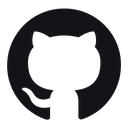
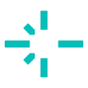

Chat
🐝 Hola, soy tu Director de Staff
Cuéntame tu idea en tus palabras: yo la traduzco a vibe coding, ordeno las fases y dirijo al staff. Nada queda a medias.
Director de Staff · Traductor Vibe Coding
Director: Hermes-3-8B-UNLOCKED (Q8 ONNX DirectML) · comprobando Free.ai…
Comprobando Free.ai…
—
Director 🐝 Hermes + …
Modo: —
- Escribe tu idea o petición tal cual la piensas, aquí o en la caja de STAFF AI.
- Yo la traduzco: 🎯 Entendido como… → trabajo SOLO en la fase activa.
- Guarda los bloques con 💾, mira el resultado con 👁 y marca ✔ al terminar la fase.
🧠 Master Prompt del Director (cómo traduzco tu lenguaje)
¿En qué trabajamos hoy, Benner?
Proyecto activo: sin proyecto · el contexto real se carga desde tu servidor
La misma instrucción se envía a dos motores independientes. Compara, combina o quédate con la mejor respuesta.
☁️ Agente A
en esperaPropongo separar la validación en un middleware reutilizable y aplicar rate-limiting por IP…
🎮 Agente B
en esperaEnfoque alternativo: tokens de sesión rotativos con refresh seguro y hashing Argon2id…
🧬 Fusión de respuestas
Combina lo mejor de ambos agentes en una única propuesta revisable antes de aplicar cambios.
El contexto se construye localmente y nunca sale de tu equipo salvo al motor elegido.
📁 Mis proyectos
🔎 Buscar en el proyecto
🧱 Constructor de contexto
Marca qué entra al prompt. Los archivos fijados 📌 siempre se incluyen.
| Archivo | Tokens | Pin | |
|---|---|---|---|
| server/index.ts | 2 140 | 📌 | |
| src/App.tsx | 1 860 | 📌 | |
| src/api/chat.ts | 1 205 | 📍 | |
| package.json | 310 | 📍 | |
| biblioteca/README.md | 940 | 📍 | |
| AVANCES_LOCAL_AI.md | 1 480 | 📍 |
Flujo seguro: vista previa del diff → aplicar por lote → backup automático → rollback en 1 clic.
🌲 Explorador
src/App.tsx
▶ Runner seguro
scripts permitidos: dev · preview · startCargando cifras…
Esquema jerárquico: cada clasificación despliega los perfiles que la componen. Clic en un perfil para verlo al detalle.
Cargando clasificación…
Elige un perfil en el esquema de la izquierda: aquí verás su descripción cognitiva y su Master Prompt.
Las skills propias del perfil seleccionado · clic para activarlas en el chat
Sin perfil seleccionado.
Conversaciones, descargas y registro de cambios — todo en tu disco, con migración y limpieza bajo tu control.
💬 Conversaciones recientes
🧾 Registro de cambios
| Archivo | Acción | Cuándo | |
|---|---|---|---|
| Cargando cambios reales… | |||
Fiabilidad primero: estado en vivo, arranque/parada seguros y diagnóstico de un clic cuando algo falla.
Ollama
● activo127.0.0.1:11434 · 7 modelos · 1 cargado en VRAM (4.1 GB)
🎮 DirectML (GPU)
● detenido127.0.0.1:8002 · ONNX INT4 · Phi-3.5 listo para cargar
Free.ai
● listoModelos cloud sin costo · clave configurada ✓ · 14 modelos
📚 Catálogo unificado de modelos
| Modelo | Motor | Tamaño | Estado | |
|---|---|---|---|---|
| qwen2.5-coder:7b | 🦙 Ollama | 4.7 GB | cargado | |
| llama3.1:8b | 🦙 Ollama | 4.9 GB | descargado | |
| Phi-3.5-mini ONNX INT4 | 🎮 DirectML | 2.3 GB | motor detenido | |
| GPT-OSS 120B | ☁️ Free.ai | — | listo | |
| Hermes-3-8B ONNX | 🎮 DirectML | 8.5 GB | motor detenido |
Telemetría real del equipo y recomendaciones que solo se aplican con tu confirmación (con copia previa).
🎛️ Evaluar un modelo
¿Cabe este modelo en tu VRAM con el contexto elegido?
🧪 Tuning recomendado
| OLLAMA_KV_CACHE_TYPE | q8_0 | óptimo |
| OLLAMA_FLASH_ATTENTION | 1 | óptimo |
| OLLAMA_MAX_LOADED_MODELS | 1 → 2 | |
| HSA_OVERRIDE_GFX_VERSION | 11.0.0 | óptimo |
Nada se aplica sin confirmación. Siempre se guarda el valor anterior para revertir.
Generación y edición sin costo (self-hosted). Las imágenes se guardan en la biblioteca de tu proyecto.
🧠 Masters: selecciona un modelo…
Genera tu primera imagen y aparecerá aquí en grande.
Si hay varias, navega con ◁ ▷
🐝 Director de Staff · edición
Perfil: specialized/director-staff-vibecoding · Modelo director fijo: Hermes-3-8B-UNLOCKED (Q8 ONNX DirectML). Lo que edites aquí se guarda en tu equipo y se aplica sobre el perfil al traducir tus mensajes en STAFF AI.
🧠 Master Prompts · Generación
Los 4 masters se activan solos según el modelo seleccionado en la pestaña (✨ +, ✨ −, 🎲 Sorpréndeme y ⚛️ Atomizar los leen en tiempo real). Puedes editarlos: se guardan en tu equipo (v2). Restaurar devuelve los profesionales de fábrica.
⚛️ Prompt atomizado ·
Descomposición generada con el Master ⚛️ del modelo. La configuración ya se restauró en Nueva imagen; copia los átomos que quieras reutilizar.
Síntesis local con NLP para español: números, fechas y abreviaturas se pronuncian correctamente.
🗣️ Texto a voz
🧠 Normalización NLP (antes → después)
| 10/11/2026 | → | “diez de noviembre de dos mil veintiséis” |
| 15:30 | → | “quince y treinta” |
| 4,7 GB | → | “cuatro coma siete gigabytes” |
| Dr. García | → | “Doctor García” |
Tokens guardados solo en tu .env local. La app nunca muestra ni registra tus claves.

GitHub
@BennerCas · 12 repos

Netlify
5 sitios · último deploy hoy
Hugging Face
Busca y descarga modelos ONNX/GGUF
SerpApi · Web
Búsqueda web para el chat
Claves API (.env)
FREEAI_API_KEY · GITHUB_TOKEN · NETLIFY_AUTH_TOKEN…
Seguridad
Sanitización de secretos en logs y errores activa
Descarga con destino siempre confirmado, progreso en vivo y detección automática de modelos ONNX para DirectML.
🛡️ Nunca se descarga en la raíz del disco ni sin carpeta confirmada.
Trabajos
| Modelo | Destino | Progreso | Estado | |
|---|---|---|---|---|
| microsoft/Phi-3.5-…-onnx | …\Modelos -ai-brains\Phi-3.5 | descargando 62% | ||
| Qwen/Qwen2.5-Coder-7B | …\Modelos -ai-brains\Qwen | completado · ONNX ✓ | ||
| Hermes-3-8B-ONNX | …\Modelos -ai-brains\Hermes | completado |
Los demás paneles que viven junto a Local AI Studio dentro de Antigravity.
🐝 Enjambre del Staff · Registro de APIs de agentes
Director fijo: 🐝 Hermes (DirectML)Añade cualquier API compatible con el formato OpenAI y Hermes podrá asignarle subtareas en las fases: OpenRouter, Groq, Together, un Ollama de otro PC (su URL /v1), LM Studio, llama.cpp server… La clave vive solo en tu navegador (localStorage), nunca sale en logs.
Cline Agent
Agente autónomo de código (CLI y Desktop), local y cloud, con su propia consola.
● sidecar externo · no se gestiona desde esta vistaOpen WebUI
Hub web completo para tus modelos locales, con herramientas y RAG.
● sidecar externo · no se gestiona desde esta vistaagentic-awesome-skills
Repo agentic-awesome-skills (sickn33): la app lo usa como fuente viva de Skills, bundles y perfiles — 2.955+ skills.
● comprobando…REA · Reverse Engineer Anything
MCP de ingeniería inversa (morluto/rea, MIT): analiza binarios, APK, apps Electron/JS y comportamiento en runtime con evidencia. Su skill estrella reverse-engineer-anything ya vive en tu catálogo 🧩. El servidor MCP se instala aparte para agentes compatibles (Cline, Claude Code…).
● skill ya integrada · MCP externoBandeja del sistema
Icono en la bandeja de Windows para abrir el Studio y ver el estado sin abrir Antigravity.
● script local del repo: local_ai_tray.pyw🧭 Flujo recomendado
1️⃣ Piensa y conversa aquí, en Chat · 2️⃣ Compara enfoques en Modo Dual · 3️⃣ Delega tareas largas a Cline · 4️⃣ Explora modelos en Open WebUI. Todo contra los mismos motores locales.
Preferencias persistentes en tu equipo. Sin telemetría: nada sale de esta máquina.
🎨 Apariencia y lectura
🩺 Diagnóstico de un clic
Comprueba puertos, procesos, rutas y claves sin exponer secretos.
Atajos: Ctrl+K buscar · Ctrl+N nuevo chat · Ctrl+. detener respuesta